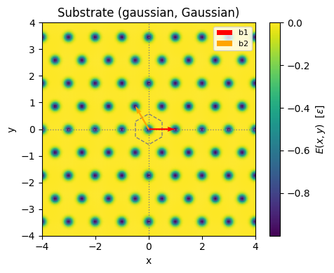
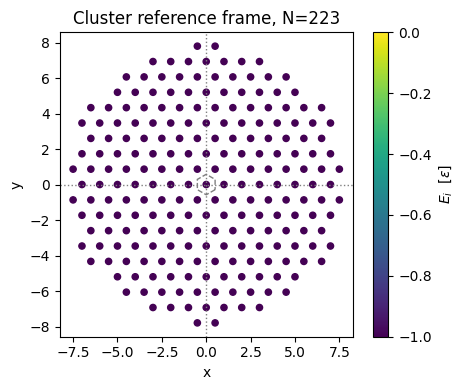
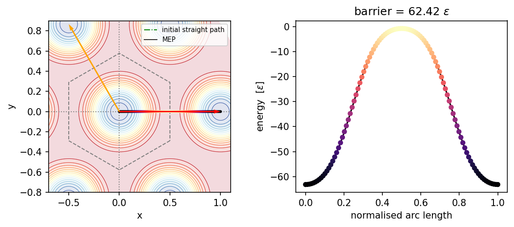
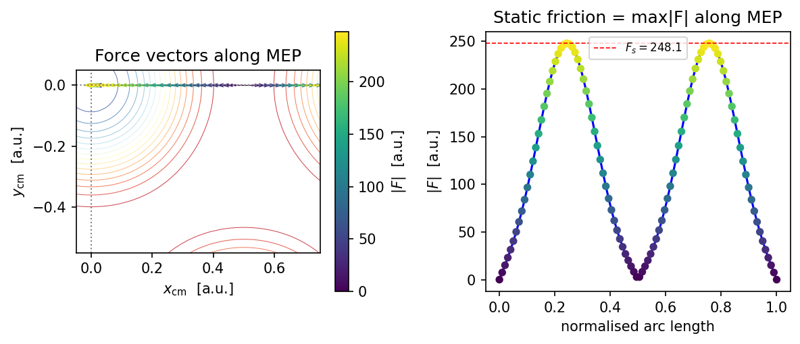
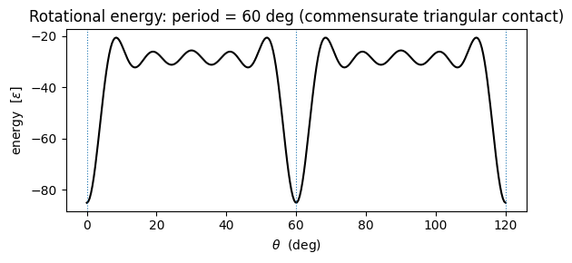
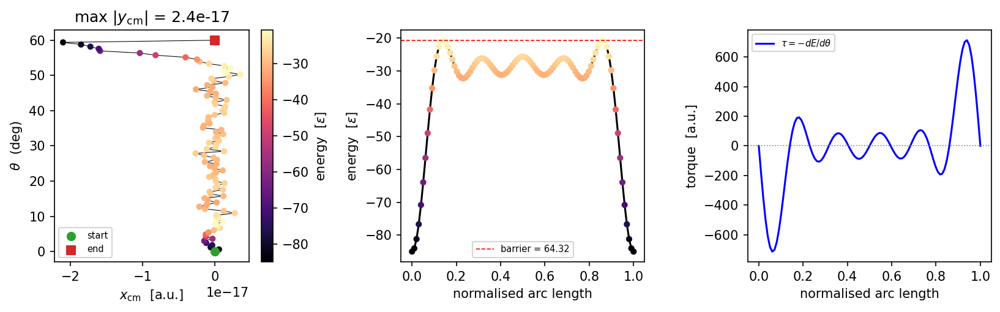
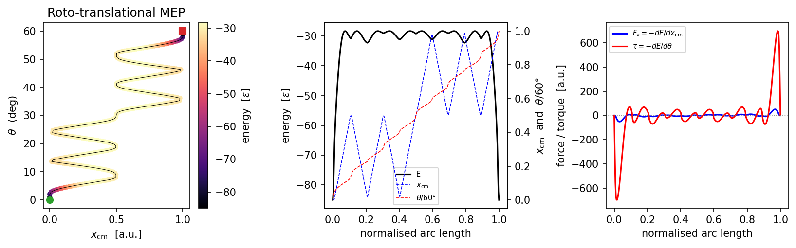

Energy barrier and minimum energy path
This notebook computes the energy barrier between two configurations of a cluster on a substrate using the string method (also called the nudged elastic band or zero-temperature string method).
The string method finds the minimum energy path (MEP) connecting two configurations p0 and p1 in configuration space. Along the MEP, the force is parallel to the path at every point (no perpendicular component), so the path represents the most probable escape route out of an energy minimum.
The maximum energy along the MEP minus the starting energy is the static friction force Fs = max|dE/ds| along the path.
We cover two cases:
2D translational MEP: CM slides at fixed orientation (x_cm, y_cm)
3D roto-translational MEP: CM slides AND cluster rotates (x_cm, y_cm, theta)
[1]:
import numpy as np
from numpy import sqrt
import matplotlib.pyplot as plt
from time import time
from flake.substrate import substrate_from_params, calc_matrices_bvect, get_ks
from flake.cluster import rotate, cluster_from_params
from flake.maps import translational_map, rotational_map
from flake.string_method import find_mep
from flake.plot import get_brillouin_zone_2d, plot_BZ2d, plot_UC, plt_cosmetic
System definition
Gaussian substrate (triangular lattice) with a commensurate circular cluster. rho=1 means the cluster and substrate share the same lattice spacing – this is the commensurate contact that maximises friction.
[8]:
rho = 1.0 # rho=1: commensurate. Try rho=1+1/20 to see barrier drop.
params = {
# --- SUBSTRATE ---
'sub_basis': [[0, 0]],
'b1': [1, 0],
'b2': [-1./2., sqrt(3.)/2.],
'epsilon': 1,
'well_shape': 'gaussian',
'sigma': 0.1, 'a': 0.3, 'b': 0.45,
# --- CLUSTER ---
'a1': list(rho * np.array([1., 0.])),
'a2': list(rho * np.array([1./2., -sqrt(3.)/2.])),
'cl_basis': [[0, 0]],
'cluster_shape': 'circle',
'N1': 15, 'N2': 15,
# theta and pos_cm are initial conditions for dynamics, NOT baked into pos.
'theta': 1.90909, 'pos_cm': [0, 0.581],
}
u, u_inv = calc_matrices_bvect(params['b1'], params['b2'])
S = u_inv.T # rows are b1, b2 (for plotting)
bz_kw = {'ls': '--', 'color': 'tab:gray', 'lw': 1, 'fill': False}
pen_func, en_func, en_inputs = substrate_from_params(params)
[9]:
# Single-particle substrate potential on a 2D grid -- sanity check.
x0, x1, nx = -4, 4, 150
y0, y1, ny = -4, 4, 150
xx, yy = np.meshgrid(np.linspace(x0, x1, nx), np.linspace(y0, y1, ny))
p = np.reshape(np.stack([xx, yy], axis=2), (-1, 2))
en, F, tau = pen_func(p, [0, 0], *en_inputs)
fig, ax = plt.subplots(dpi=100, figsize=(5, 4))
sc = ax.scatter(p[:, 0], p[:, 1], c=en, s=1, rasterized=True)
plt.colorbar(sc, label=r'$E(x,y)$ [$\epsilon$]', ax=ax)
plot_BZ2d(ax, get_brillouin_zone_2d(S), bz_kw)
ax.quiver(0, 0, *S[0], angles='xy', scale_units='xy', scale=1,
zorder=5, color='red', label='b1')
ax.quiver(0, 0, *S[1], angles='xy', scale_units='xy', scale=1,
zorder=5, color='orange', label='b2')
ax.legend(loc='upper right', fontsize=8)
ax.set_xlim([x0, x1])
ax.set_ylim([y0, y1])
ax.set_xlabel('x [a.u.]')
ax.set_ylabel('y [a.u.]')
ax.set_title('Substrate (%s, Gaussian)' % params['well_shape'])
plt_cosmetic(ax)
plt.tight_layout()
plt.show()

Cluster
[11]:
# cluster_from_params returns pos in the REFERENCE FRAME: CM at origin, theta=0.
# theta and pos_cm from params are NOT applied here -- new API convention.
pos = cluster_from_params(params)
N = pos.shape[0]
print('Cluster %s, N=%i' % (params['cluster_shape'], N))
pos_cm_arr = np.asarray(params['pos_cm'])
pen, pF, ptau = pen_func(pos, pos_cm_arr, *en_inputs)
fig, ax = plt.subplots(dpi=100, figsize=(5, 4))
sc = ax.scatter(pos[:, 0], pos[:, 1], c=pen, s=20, vmin=-params['epsilon'], vmax=0)
plt.colorbar(sc, label=r'$E_i$ [$\epsilon$]', ax=ax)
plot_BZ2d(ax, get_brillouin_zone_2d(S), bz_kw)
ax.set_xlabel('x [a.u.]')
ax.set_ylabel('y [a.u.]')
ax.set_title('Cluster reference frame, N=%d' % N)
plt_cosmetic(ax)
plt.tight_layout()
plt.show()
Cluster circle, N=223

Translational energy landscape
Compute E(x_cm, y_cm) at fixed orientation theta. We pre-rotate pos to the desired theta before calling translational_map (which treats pos as fixed).
[12]:
pos_rot = rotate(pos, params['theta'])
t0 = time()
map_result = translational_map(
pos_rot, en_func, en_inputs, u_inv,
n_x=200, n_y=200,
frac_x=(-1.5, 1.5), frac_y=(-1.5, 1.5),
)
te = time() - t0
print('Map done: %is (%.2fmin)' % (te, te/60))
pp = map_result['pos_cm']
enmap = map_result['energy']
Fmap = map_result['force']
taumap = map_result['torque']
# Reshape to 2D for contour plotting (n_x == n_y assumed here).
n_grid = int(np.sqrt(pp.shape[0]))
xx_g = pp[:, 0].reshape(n_grid, n_grid)
yy_g = pp[:, 1].reshape(n_grid, n_grid)
zz_g = enmap.reshape(n_grid, n_grid)
Map done: 1s (0.02min)
2D translational MEP
find_mep with dim=2 finds the MEP in (x_cm, y_cm) space at fixed orientation. The cluster pos must be pre-rotated to the desired theta. The maximum |force| along the MEP is the static friction Fs.
[14]:
p0_2d = [0.0, 0.0]
p1_2d = [1.0, 0.0] # one lattice vector away along x
t0 = time()
mep = find_mep(
pos_rot, en_func, en_inputs,
p0=p0_2d, p1=p1_2d,
n_pt=100, max_steps=3000, dt=1e-4,
fix_ends=True, tol=1e-8,
)
te = time() - t0
print('String done: %is (%.2fmin) converged=%s steps=%i'
% (te, te/60, mep['converged'], mep['n_steps']))
print('Barrier: %.5g' % mep['barrier'])
pts = mep['points'] # (n_pt, 2): (x_cm, y_cm)
en = mep['energy'] # (n_pt,)
s = np.linspace(0, 1, len(pts))
fig, (axE, axpath) = plt.subplots(1, 2, dpi=150, figsize=(8, 3.5))
# Energy landscape with MEP overlaid
axE.contourf(xx_g, yy_g, zz_g, levels=20, cmap='RdYlBu_r', alpha=0.15)
axE.contour( xx_g, yy_g, zz_g, levels=20, cmap='RdYlBu_r', linewidths=0.5)
plot_BZ2d(axE, get_brillouin_zone_2d(S), bz_kw)
axE.quiver(0, 0, *S[0], angles='xy', scale_units='xy', scale=1,
zorder=5, color='red')
axE.quiver(0, 0, *S[1], angles='xy', scale_units='xy', scale=1,
zorder=5, color='orange')
axE.plot([p0_2d[0], p1_2d[0]], [p0_2d[1], p1_2d[1]],
'-.', color='green', lw=1, label='initial straight path', zorder=1)
axE.plot(pts[:, 0], pts[:, 1], '-k', lw=0.8, label='MEP', zorder=2)
axE.scatter(pts[:, 0], pts[:, 1], c=en, cmap='magma', s=4, zorder=3)
axE.set_xlim([-0.7, 1.1])
axE.set_ylim([-0.8, 0.9])
axE.set_xlabel(r'$x_\mathrm{cm}$ [a.u.]')
axE.set_ylabel(r'$y_\mathrm{cm}$ [a.u.]')
axE.legend(loc='upper right', fontsize=7)
plt_cosmetic(axE)
# Energy profile along MEP
axpath.plot(s, en, '-k')
axpath.scatter(s, en, c=en, cmap='magma', s=20, zorder=2)
axpath.set_xlabel('normalised arc length')
axpath.set_ylabel(r'energy [$\epsilon$]')
axpath.set_title('barrier = %.4g $\\epsilon$' % mep['barrier'])
plt.tight_layout()
plt.show()
String done: 0s (0.00min) converged=True steps=119
Barrier: 62.416

Force along the MEP = static friction
The gradient returned by find_mep is -dE/d(pos_cm) = force at each path point. Its maximum magnitude is the static friction force Fs: the minimum external force needed to push the cluster over the barrier.
[15]:
grad = mep['gradient'] # (n_pt, 2): force at each path point
Fpath = np.linalg.norm(grad, axis=1)
print('Static friction Fs = max|F| = %.5g' % Fpath.max())
fig, (axE, axpath) = plt.subplots(1, 2, dpi=150, figsize=(8, 3.5))
axE.contour(xx_g, yy_g, zz_g, levels=20, cmap='RdYlBu_r', linewidths=0.5, alpha=0.8)
axE.plot(pts[:, 0], pts[:, 1], '-k', lw=0.5, zorder=1)
qv = axE.quiver(pts[:, 0], pts[:, 1],
grad[:, 0], grad[:, 1], Fpath,
angles='xy', scale_units='xy', scale=1e3,
zorder=2, cmap='viridis')
plt.colorbar(qv, ax=axE, label=r'$|F|$ [a.u.]')
plt_cosmetic(axE)
axE.set_xlim([-0.05, 0.75])
axE.set_ylim([-0.55, 0.05])
axE.set_xlabel(r'$x_\mathrm{cm}$ [a.u.]')
axE.set_ylabel(r'$y_\mathrm{cm}$ [a.u.]')
axE.set_title('Force vectors along MEP')
axpath.plot(s, Fpath, '-b')
axpath.scatter(s, Fpath, c=Fpath, cmap='viridis', s=20, zorder=2)
axpath.axhline(Fpath.max(), ls='--', color='red', lw=0.8,
label=r'$F_s = %.4g$' % Fpath.max())
axpath.set_xlabel('normalised arc length')
axpath.set_ylabel(r'$|F|$ [a.u.]')
axpath.set_title('Static friction = max|F| along MEP')
axpath.legend(fontsize=8)
plt.tight_layout()
plt.show()
Static friction Fs = max|F| = 248.08

3D roto-translational MEP
Here the configuration space is 3D: (x_cm, y_cm, theta). The string method finds the MEP in this space, so both translation and rotation are free to relax simultaneously.
Scaled arc-length metric
The three coordinates have different units (length vs degrees), so we rescale them before computing arc lengths:
ds^2 = (dx/lx)^2 + (dy/ly)^2 + (dtheta/ltheta)^2
Here lx = ly = 1 (substrate lattice spacing) and ltheta = 60 deg (the angular period for commensurate triangular-on-triangular contact). With this metric all three DOF contribute equally to the path length.
Important: for find_mep with dim=3, pos MUST be in the reference frame (theta=0, CM at origin). The string method applies rotation internally at each path point. Do NOT pre-rotate pos before calling.
[17]:
# Commensurate system: sinusoidal triangular substrate, small cluster.
ks = get_ks(1, 3, 4./3., 0.) # triangular wave vectors
params_comm = {
'sub_basis': [[0, 0]],
'epsilon': 1,
'well_shape': 'sin',
'ks': ks,
'a1': np.array([1., 0.]),
'a2': np.array([1./2., -sqrt(3.)/2.]),
'cl_basis': [[0, 0]],
'cluster_shape': 'circle',
'N1': 9, 'N2': 9, # small cluster for speed
'theta': 0.0, 'pos_cm': [0, 0],
}
pen_func_c, en_func_c, en_inputs_c = substrate_from_params(params_comm)
pos_c = cluster_from_params(params_comm)
N_c = pos_c.shape[0]
print('Commensurate cluster N=%i' % N_c)
Commensurate cluster N=85
Sanity check: rotational period
Before computing the 3D MEP, verify that the angular period is 60 deg as expected for triangular-on-triangular contact.
[18]:
theta_vals = np.linspace(0, 120, 300) # two full periods
rot_result = rotational_map(pos_c, en_func_c, en_inputs_c,
theta_deg=theta_vals, pos_cm=[0, 0])
fig, ax = plt.subplots(dpi=100, figsize=(6, 3))
ax.plot(theta_vals, rot_result['energy'], '-k')
for t0_v in [0, 60, 120]:
ax.axvline(t0_v, ls=':', color='tab:blue', lw=0.8)
ax.set_xlabel(r'$\theta$ (deg)')
ax.set_ylabel(r'energy [$\epsilon$]')
ax.set_title('Rotational energy: period = 60 deg (commensurate triangular contact)')
plt.tight_layout()
plt.show()

Pure rotational MEP (theta: 0 -> 60 deg)
The cluster starts at theta=0 and rotates to the next equivalent minimum at theta=60 deg. The barrier is the rotational depinning torque.
[20]:
p0_3d = [0.0, 0.0, 0.0] # x_cm, y_cm, theta [deg]
p1_3d = [0.0, 0.0, 60.0] # next equivalent minimum (pure rotation)
# ltheta = 60 deg makes the angular coordinate dimensionally compatible
# with the translational ones (both scaled to O(1)).
ltheta = 60.0
scale_3d = [1.0, 1.0, ltheta]
t0 = time()
mep3 = find_mep(
pos_c, en_func_c, en_inputs_c, # reference-frame pos -- NOT pre-rotated
p0=p0_3d, p1=p1_3d,
n_pt=100, max_steps=5000, dt=1e-4,
fix_ends=True, tol=1e-8,
scale=scale_3d,
)
te = time() - t0
print('3D MEP done: %is converged=%s steps=%i'
% (te, mep3['converged'], mep3['n_steps']))
print('Rotational barrier: %.5g' % mep3['barrier'])
pts3 = mep3['points'] # (n_pt, 3): x_cm, y_cm, theta_deg
en3 = mep3['energy']
grad3 = mep3['gradient'] # (n_pt, 3): Fx, Fy, tau
s3 = np.linspace(0, 1, len(pts3))
fig, axes = plt.subplots(1, 3, dpi=150, figsize=(11, 3.5))
ax_xt, ax_en, ax_tau = axes
# Path in (x_cm, theta) space, coloured by energy.
# y_cm should remain ~0 by symmetry for this pure-rotation path.
sc = ax_xt.scatter(pts3[:, 0], pts3[:, 2], c=en3, cmap='magma', s=15, zorder=3)
ax_xt.plot(pts3[:, 0], pts3[:, 2], '-k', lw=0.5, zorder=2)
ax_xt.scatter([p0_3d[0]], [p0_3d[2]], marker='o', color='tab:green', s=40, zorder=4, label='start')
ax_xt.scatter([p1_3d[0]], [p1_3d[2]], marker='s', color='tab:red', s=40, zorder=4, label='end')
plt.colorbar(sc, ax=ax_xt, label=r'energy [$\epsilon$]')
ax_xt.set_xlabel(r'$x_\mathrm{cm}$ [a.u.]')
ax_xt.set_ylabel(r'$\theta$ (deg)')
ax_xt.set_title(r'max $|y_\mathrm{cm}|$ = %.2g' % np.abs(pts3[:, 1]).max())
ax_xt.legend(fontsize=7)
# Energy profile.
ax_en.plot(s3, en3, '-k')
ax_en.scatter(s3, en3, c=en3, cmap='magma', s=15, zorder=2)
ax_en.axhline(en3.max(), ls='--', color='red', lw=0.8,
label='barrier = %.4g' % mep3['barrier'])
ax_en.set_xlabel('normalised arc length')
ax_en.set_ylabel(r'energy [$\epsilon$]')
ax_en.legend(fontsize=7)
# Torque along path: tau = -dE/dtheta drives the rotation.
ax_tau.plot(s3, grad3[:, 2], '-b', label=r'$\tau = -dE/d\theta$')
ax_tau.axhline(0, ls=':', color='gray', lw=0.8)
ax_tau.set_xlabel('normalised arc length')
ax_tau.set_ylabel(r'torque [a.u.]')
ax_tau.legend(fontsize=7)
plt.tight_layout()
plt.show()
3D MEP done: 0s converged=True steps=1
Rotational barrier: 64.318

Roto-translational MEP (x_cm: 0->1, theta: 0->60 deg)
A more physically rich path: the cluster translates by one lattice vector AND rotates to the next commensurate orientation simultaneously. This is the typical depinning trajectory when both translational and rotational degrees of freedom are active.
[21]:
p0_rt = [0.0, 0.0, 0.0]
p1_rt = [1.0, 0.0, 60.0] # one lattice step in x + one angular period
t0 = time()
mep_rt = find_mep(
pos_c, en_func_c, en_inputs_c,
p0=p0_rt, p1=p1_rt,
n_pt=300, max_steps=5000, dt=1e-3,
fix_ends=True, tol=1e-4,
scale=scale_3d,
)
te = time() - t0
print('Roto-translational MEP: %is converged=%s barrier=%.5g'
% (te, mep_rt['converged'], mep_rt['barrier']))
pts_rt = mep_rt['points']
en_rt = mep_rt['energy']
grad_rt = mep_rt['gradient']
s_rt = np.linspace(0, 1, len(pts_rt))
fig, axes = plt.subplots(1, 3, dpi=150, figsize=(11, 3.5))
ax_xt, ax_en, ax_fg = axes
sc = ax_xt.scatter(pts_rt[:, 0], pts_rt[:, 2], c=en_rt, cmap='magma', s=15)
ax_xt.plot(pts_rt[:, 0], pts_rt[:, 2], '-k', lw=0.5)
ax_xt.scatter([p0_rt[0]], [p0_rt[2]], marker='o', color='tab:green', s=40, zorder=4)
ax_xt.scatter([p1_rt[0]], [p1_rt[2]], marker='s', color='tab:red', s=40, zorder=4)
plt.colorbar(sc, ax=ax_xt, label=r'energy [$\epsilon$]')
ax_xt.set_xlabel(r'$x_\mathrm{cm}$ [a.u.]')
ax_xt.set_ylabel(r'$\theta$ (deg)')
ax_xt.set_title('Roto-translational MEP')
# Energy + x_cm + theta along path (on twin axes for scale).
ax_en.plot(s_rt, en_rt, '-k', label='E')
axt2 = ax_en.twinx()
axt2.plot(s_rt, pts_rt[:, 0], '--b', lw=0.8, label=r'$x_\mathrm{cm}$')
axt2.plot(s_rt, pts_rt[:, 2]/ltheta, '--r', lw=0.8, label=r'$\theta/60°$')
axt2.set_ylabel(r'$x_\mathrm{cm}$ and $\theta/60°$')
lines1, labs1 = ax_en.get_legend_handles_labels()
lines2, labs2 = axt2.get_legend_handles_labels()
ax_en.legend(lines1+lines2, labs1+labs2, fontsize=7)
ax_en.set_xlabel('normalised arc length')
ax_en.set_ylabel(r'energy [$\epsilon$]')
# Fx and tau along path -- show what drives each degree of freedom.
ax_fg.plot(s_rt, grad_rt[:, 0], '-b', label=r'$F_x = -dE/dx_\mathrm{cm}$')
ax_fg.plot(s_rt, grad_rt[:, 2], '-r', label=r'$\tau = -dE/d\theta$')
ax_fg.axhline(0, ls=':', color='gray', lw=0.8)
ax_fg.set_xlabel('normalised arc length')
ax_fg.set_ylabel('force / torque [a.u.]')
ax_fg.legend(fontsize=7)
plt.tight_layout()
plt.show()
Roto-translational MEP: 22s converged=True barrier=56.667

[ ]: